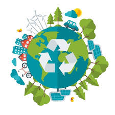

El reciclaje consiste en obtener una nueva materia prima o producto, mediante un proceso fisicoquímico o mecánico,
a partir de productos y materiales ya en desuso o utilizado. De esta forma, conseguimos extender su ciclo de vida útil,
ahorrando materiales y beneficiando al medio ambiente al combatir la acumulación de desechos en el mundo.
No todos los materiales son reciclables, pero un buen número de ellos sí, como el cartón , el vidrio ,
el aluminio, el papel y ciertos tipos de plásticos , que pueden ser sometidos a diversos procesos de
reaprovechamiento y recomenzar su ciclo de utilidad.
Proceso de reciclaje
Todo el proceso del reciclaje, pasa por varias fases:
Separación
El reciclaje comienza en entornos industriales y domésticos, mediante la separación de los materiales.
Recuperacion
El siguiente paso consiste en la recuperación de estos materiales por las empresas públicas y privadas y su posterior traslado a las plantas de transferencia.
Plantas de trasnferencia
Se almacenan y compactan los materiales para su posterior transporte hacia las plantas de reciclaje.
Plantas de reciclaje
En estas plantas, encontramos en algunos casos, las plantas de valoración, o reciclador final, donde se obtienen nuevas materias o productos o bien se produce energía